سُفرة
سُفرةمصادر الصور
Photo credits: real food photos used under open licenses
كل صور الأكل في سُفرة صور حقيقية منشورة بتراخيص مفتوحة (CC0 والملكية العامة و CC BY و CC BY-SA). الشكر لأصحابها.
الصور مقصوصة ومصغّرة ومعدّلة الألوان قليلًا لتناسب التطبيق، والنسخ المعدّلة من صور CC BY-SA متاحة بنفس الترخيص.
Images were cropped, resized and lightly color adjusted. Adapted CC BY-SA images are shared under the same license.
التصنيفات Categories
8 صور| الصورة | الاستخدام والعنوان | المصوّر | الترخيص | المصدر |
|---|---|---|---|---|
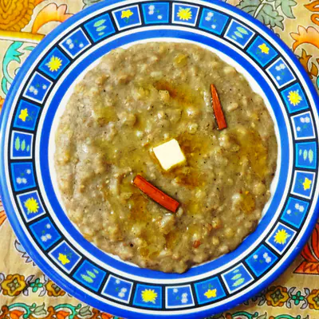 |
تصنيف شعبياتHarees | Miansari66CC0ويكيميديا كومنز | CC0 | ويكيميديا كومنز |
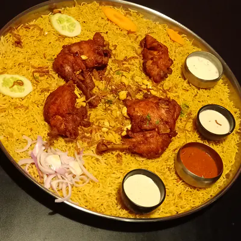 |
تصنيف رز ومنديChicken mandi | AmeyaKusumaCC BY-SA 4.0ويكيميديا كومنز | CC BY-SA 4.0 | ويكيميديا كومنز |
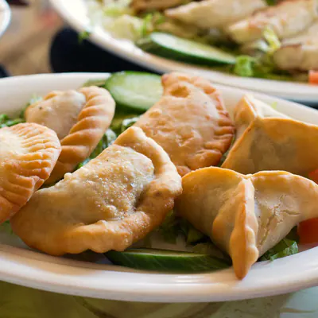 |
تصنيف معجناتHeritage village fatayer (11389764333) | KristaCC BY 2.0ويكيميديا كومنز | CC BY 2.0 | ويكيميديا كومنز |
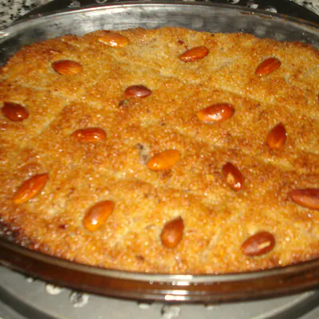 |
تصنيف حلابسبوسة | Ovva olfaCC BY-SA 4.0ويكيميديا كومنز | CC BY-SA 4.0 | ويكيميديا كومنز |
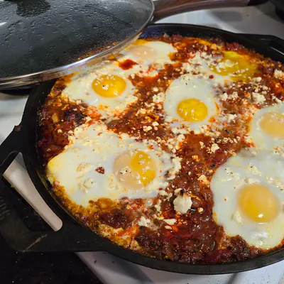 |
تصنيف فطورManish's shakshuka | quinn.anyaCC BY-SA 2.0فليكر | CC BY-SA 2.0 | فليكر |
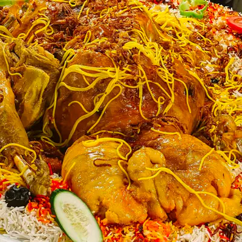 |
تصنيف عزايم وولائمطبق مفطح | متسببCC0ويكيميديا كومنز | CC0 | ويكيميديا كومنز |
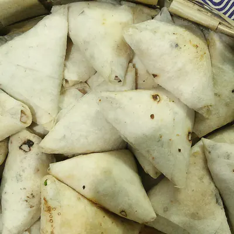 |
تصنيف مفرزناتRaw Mutton Samosa | Ashishchavda12CC BY-SA 4.0ويكيميديا كومنز | CC BY-SA 4.0 | ويكيميديا كومنز |
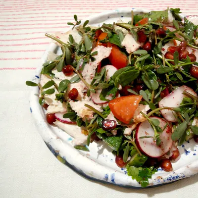 |
تصنيف صحيFattoush Portulaca oleracea | SakatekaCC BY-SA 4.0ويكيميديا كومنز | CC BY-SA 4.0 | ويكيميديا كومنز |
الأطباق Dishes
20 صورةأغلفة الأسر وشعاراتها Family covers and logos
8 صور| الصورة | الاستخدام والعنوان | المصوّر | الترخيص | المصدر |
|---|---|---|---|---|
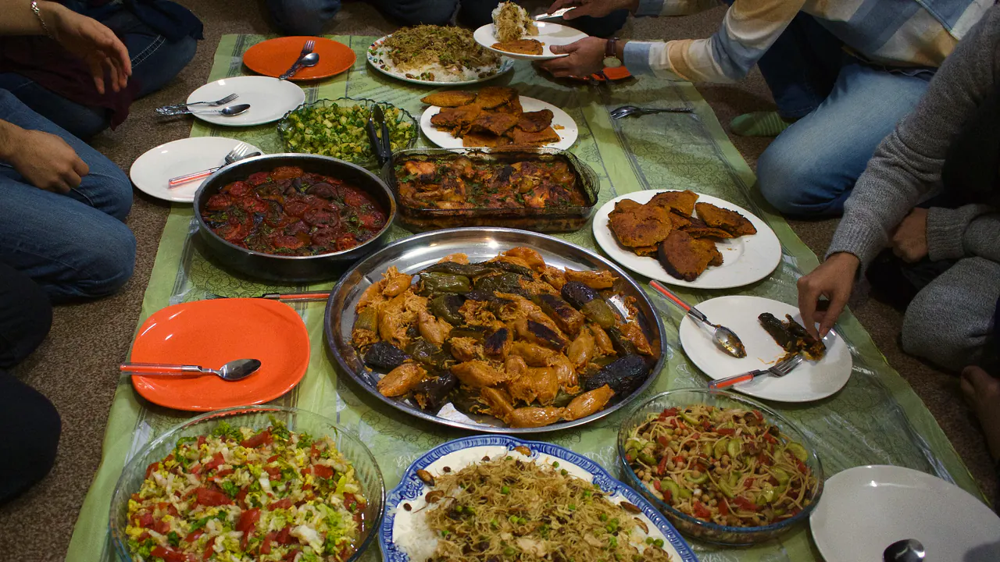 |
غلاف مطبخ أم فهدIraqi dinner spread | Levi ClancyCC0ويكيميديا كومنز | CC0 | ويكيميديا كومنز |
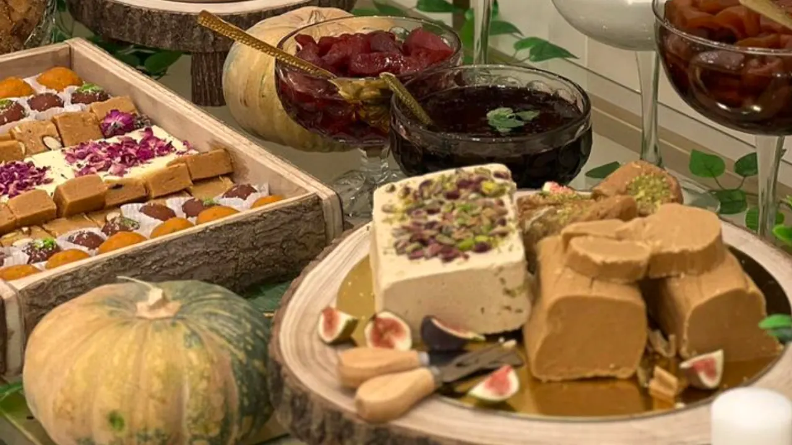 |
غلاف حلا البيتتعتيمة حجازية | شمنصيرCC BY-SA 4.0ويكيميديا كومنز | CC BY-SA 4.0 | ويكيميديا كومنز |
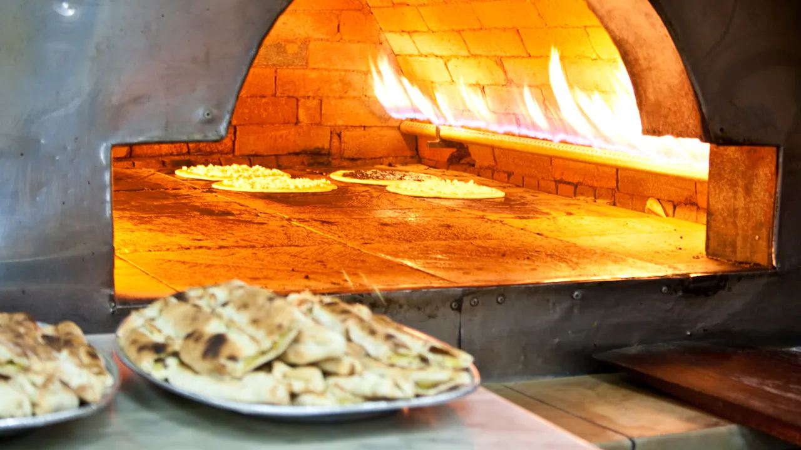 |
غلاف معجنات جودNaurah fresh | omar_chatriwalaCC BY 2.0ويكيميديا كومنز | CC BY 2.0 | ويكيميديا كومنز |
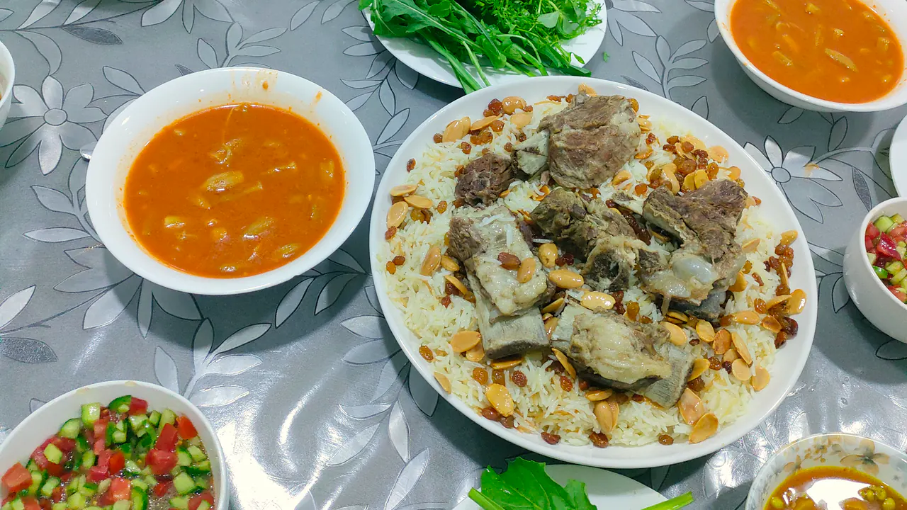 |
غلاف سفرة الولائمعزيمة عراقية | Lamya sultanahCC BY-SA 4.0ويكيميديا كومنز | CC BY-SA 4.0 | ويكيميديا كومنز |
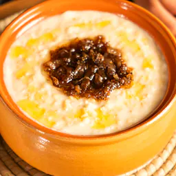 |
شعار مطبخ أم فهدالجريش | TmogarryCC BY-SA 4.0ويكيميديا كومنز | CC BY-SA 4.0 | ويكيميديا كومنز |
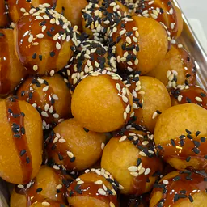 |
شعار حلا البيتLugaimat Riyadh 2024 | Hamza A. DurraniCC BY 4.0ويكيميديا كومنز | CC BY 4.0 | ويكيميديا كومنز |
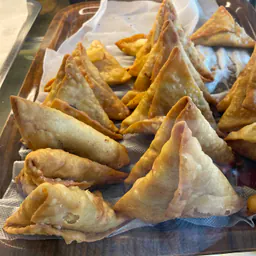 |
شعار معجنات جودSamosas on a tray | OwobusingyeCC BY 4.0ويكيميديا كومنز | CC BY 4.0 | ويكيميديا كومنز |
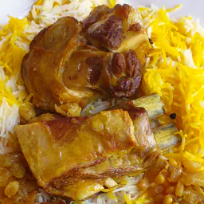 |
شعار سفرة الولائممكبوس لحم | Mishary94CC BY-SA 4.0ويكيميديا كومنز | CC BY-SA 4.0 | ويكيميديا كومنز |
صفحة الانضمام Join page
صورة واحدة| الصورة | الاستخدام والعنوان | المصوّر | الترخيص | المصدر |
|---|---|---|---|---|
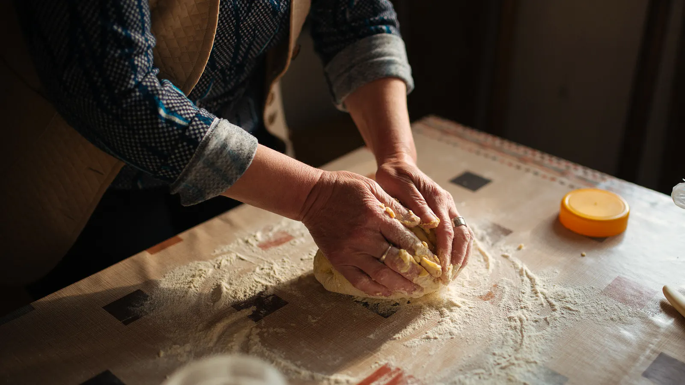 |
صورة صفحة انضمام الأسرBaker woman's hands kneading bread dough | Shixart1985CC BY 2.0ويكيميديا كومنز | CC BY 2.0 | ويكيميديا كومنز |